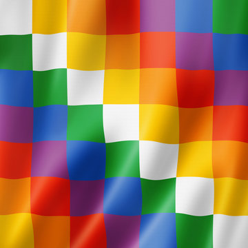

The Wiphala (concept)

- Square emblem used as a flag by Indigenous Andean peoples; diagonal color sequencing with row/column offsets.
- We avoid naming “Wiphala” in prompts; students infer pattern and code it.
- Pedagogical bridge: 2D indexing, modular arithmetic, sequence rotations.